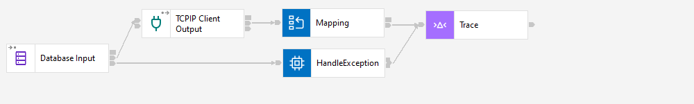

Protocol Transformation Pattern: Database to TCPIP

The Database to TCPIP pattern provides a simple integration solution that takes input data from a Database and outputs to TCPIP.

The Database to TCPIP pattern provides a simple integration solution that takes input data from a Database and outputs to TCPIP.